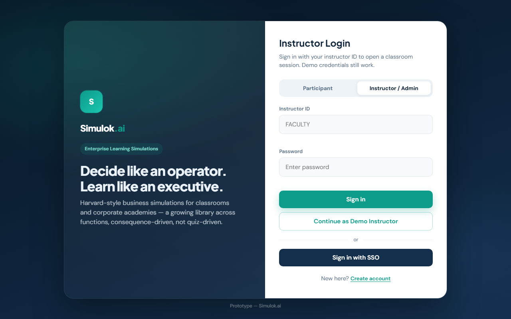
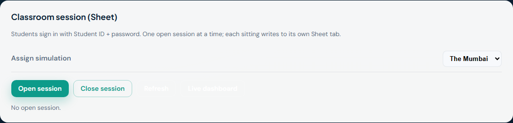
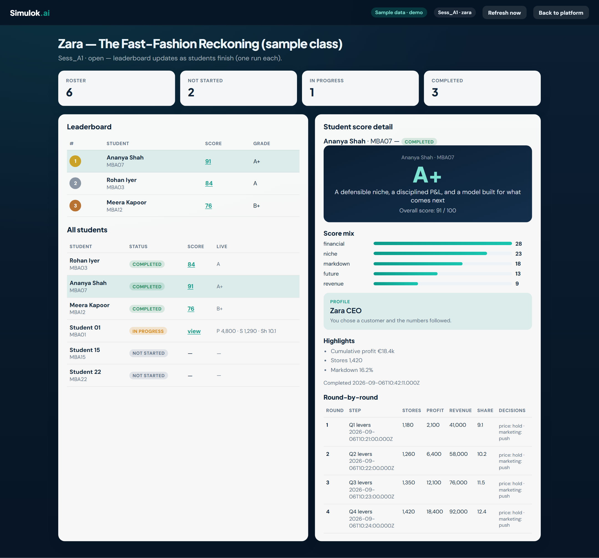
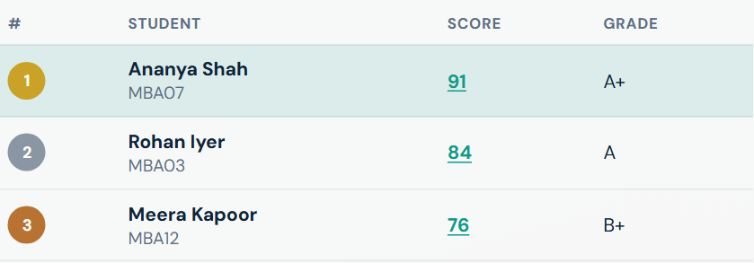
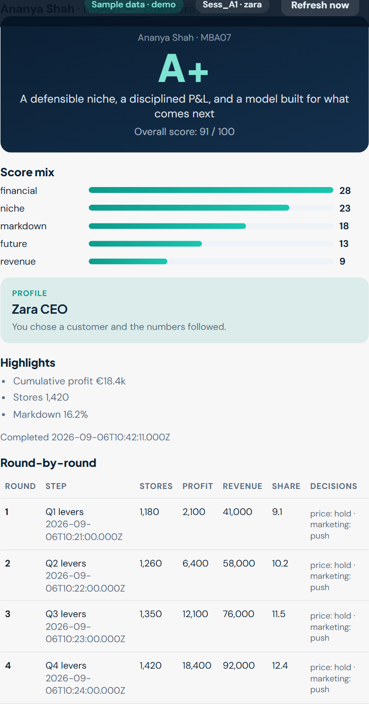
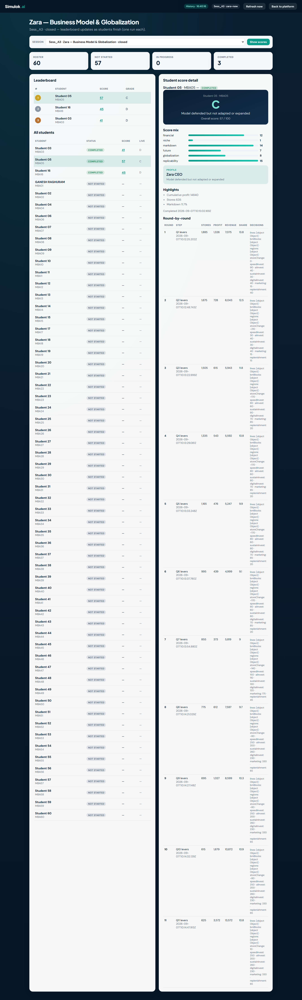
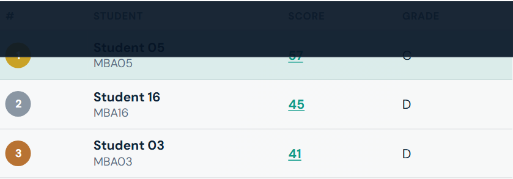
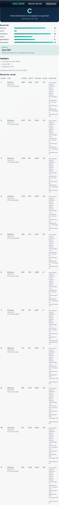

1. Sign in as instructor
- Open https://simulok.in/platform/.
- Select Instructor / Admin.
- Enter Instructor ID and password (sample:
FACULTY/faculty-demo). - Click Sign in → Instructor Console.

You can refresh the page without signing out. Login stays until you click Sign out.
2. Open a session
- In Classroom session (Sheet), choose the simulation (Mumbai, Zara, Zara-new, or Zenith).
- Click Open session. The Sheet gets a tab such as
Sess_A1. - Tell students the session is live, then share only the platform + student guide links (below).

Only one session can be open at a time. Opening the wrong title mid-class locks students to that sim.
3. Watch live scores
- Class scores & history on the console refreshes about every 6 seconds.
- Click any student or score for grade, score mix, and round-by-round KPIs.
- Full dashboard opens the projector-friendly page (same browser after FACULTY login).
Preview without a live class: dashboard.html?demo=1

?demo=1): counts, leaderboard, roster, and selected student detail with round-by-round KPIs.

Live class example
Captured from a real sitting (Sess_A3 — Zara Business Model & Globalization) after FACULTY login.



4. Past sessions
Closed sittings stay in the Sheet. Reopen any of them for scores.
- Use the Session dropdown under Class scores & history.
- Pick e.g.
Sess_A3→ scores load (or click Show scores). - On the full dashboard, use the same session picker.
5. Reset runs — let students play once again
By default each student may complete once per session.
- Select the sitting in the Session dropdown.
- Click Reset runs and confirm.
- That sitting’s logs are cleared. Every student may complete once again on that session.
Reset deletes scores for the selected sitting only. For a graded retake that keeps old history: Close → Open (new
Sess_A4).6. Close / next cohort
- Click Close session when the sitting ends.
- Next class: Open session again → new tab (
Sess_A2, …).
8. Tips & troubleshooting
Student names on the board
Ask students to type their real name on login so the dashboard shows names, not only MBA01.
“Already completed”
Use Reset runs or open a new session.
Dashboard asks for instructor sign-in
Sign in as FACULTY on the platform in the same browser first.
Demo without the Sheet
Continue as Demo Instructor works for a walkthrough. Live logging needs roster login + an open session.